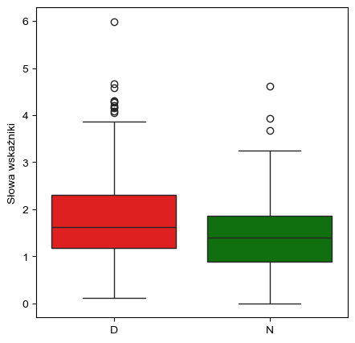
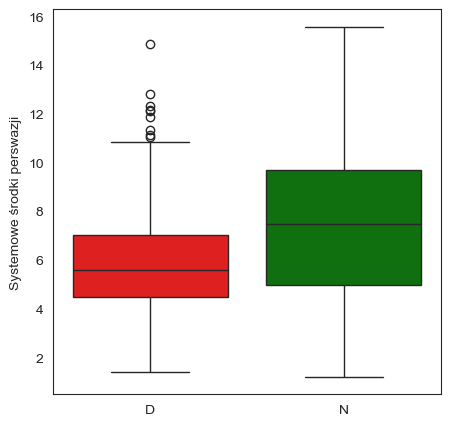
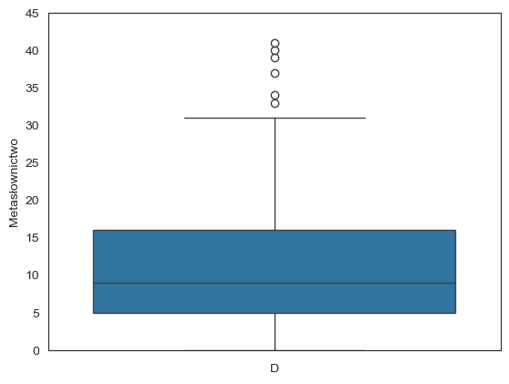
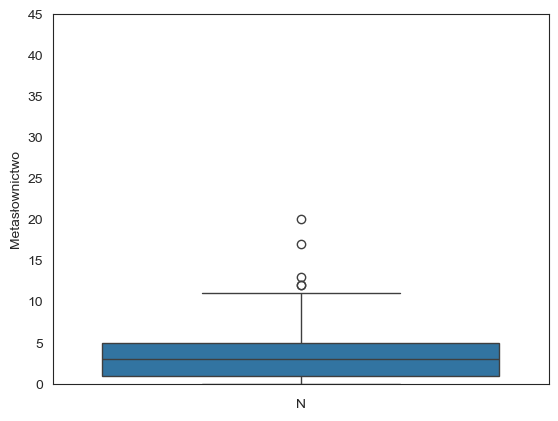
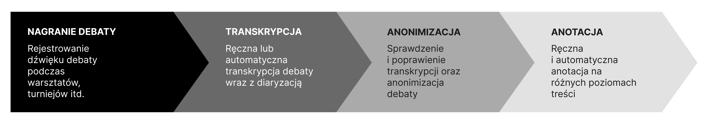

Korpus debat konkursowych#
Statystyki korpusu#
Poziom |
Format |
Liczba debat |
Liczba mów |
Liczba słów |
Średnia długość mowy |
|---|---|---|---|---|---|
Doświadczeni |
BP |
4 |
32 |
37 592 |
1 175 |
Doświadczeni |
LD |
4 |
20 |
14 750 |
738 |
Doświadczeni |
KP |
2 |
12 |
9 240 |
770 |
Doświadczeni |
DOx |
8 |
64 |
49 790 |
778 |
Suma (D) |
19 |
134 |
111 372 |
||
Nowicjusze |
BP |
4 |
32 |
19 648 |
614 |
Nowicjusze |
LD |
4 |
20 |
8 766 |
438 |
Nowicjusze |
KP |
4 |
24 |
13 256 |
552 |
Nowicjusze |
DOx |
4 |
32 |
13 587 |
424 |
Suma (N) |
16 |
108 |
55 257 |
||
Suma |
35 |
242 |
166 629 |
Wybrane wskaźniki#




Źródło danych#
Dane do korpusu zostały zebrane dwutorowo. Po pierwsze, zorganizowano serię warsztatów oraz przeprowadzono szereg debat w celu zbudowania korpusu. Debaty te były zorganizowane w trzech formatach (debata Lincoln-Douglas, debata Karla Poppera oraz brytyjska debata parlamentarna) i brali w nich udział uczestnicy, których można podzielić na dwie grupy: nowicjusze (mówcy niedoświadczeni), tj. studenci po kursie retoryki i warsztatach z debat, którzy nigdy wcześniej nie mieli doświadczenia udziału w debacie konkursowej czy uczestnictwa w klubie debat; doświadczeni, tj. praktykujący debatanci, często członkowie szkolnych lub akademickich klubów debat, niekiedy także organizatorzy i sędziowie debat.
Przeprowadzone debaty dotyczyły czterech tez:
Rozwój portali i aplikacji randkowych przyniósł więcej szkód niż pożytku.
Zaangażowanie celebrytów w ruchy społeczne przynosi więcej szkód niż korzyści.
W Polsce należy zmniejszyć liczbę uczelni wyższych.
Wiek emerytalny kobiet i mężczyzn powinien zostać zrównany.
Opisywany pierwszy etap zbierania danych był zaprojektowany w taki sposób, aby wesprzeć możliwość zweryfikowania hipotezy, wedle której zachodzą różnice w podejściu do budowania argumentacji między formatami oraz różnice w budowaniu argumentacji ze względu na doświadczenie mówców w gatunku debaty konkursowej. Stąd debaty odbywały się w różnych formatach, ale nad tymi samymi czterema tezami.
Drugi etap zbioru danych to włączenie formatu debaty oksfordzkiej do korpusu. Tutaj teksty zostały pozyskane z nagrań debat, które odbywały się na turniejach lub w okolicznościach debat pokazowych. Ten zestaw danych wciąż zachowuje podział na osoby początkujące i doświadczone, rozszerza jednak zakres tez, nad którymi odbywały się debaty. Decyzja o włączeniu debaty oksfordzkiej do korpusu była podyktowana jej powszechnością w polskim środowisku debatanckim i jej wpływem na postrzeganie debat konkursowych w Polsce.
Niezależnie od etapu zbioru danych i formatu, z którym mamy do czynienia, proces włączania debaty do korpusu wyglądał tak samo. Pierwszy etap po pozyskaniu nagrania debaty to jego ręczna lub automatyczna transkrypcja. Następnie transkrypcja jest sprawdzana i uzupełniana (szczególnie ta automatyczna) oraz zanonimizowana.

Model#
Korpus został zaanotowany pod kątem słów wskaźników oraz wybranych systemowych środków perswazji z wykorzystaniem autorskiego modelu AI opartego na architekturze transformerów (model BERT). Jego ogólna skuteczność (F1 score) wynosi ok. 75%.
Skuteczność dla poszczególnych etykiet wynosi odpowiednio:
słowa wskaźniki – 86,90%
zapewnianie – 70,95%
chronienie – 76,83%
odpieranie – 90,27%
wartościowanie – 66,00%
Jak cytować#
Będkowski M., Rogowska K.J. (2024), Systemic Means of Persuasion and Argument Evaluation: Insights From the Corpus of Competitive Debates, „Informal Logic”, Vol. 44, No. 2, ss. 166–207. DOI: https://doi.org/10.22329/il.v44i2.8372